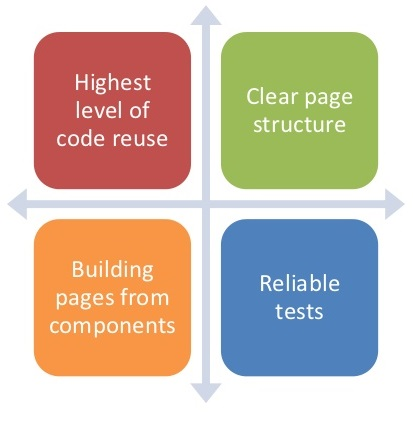
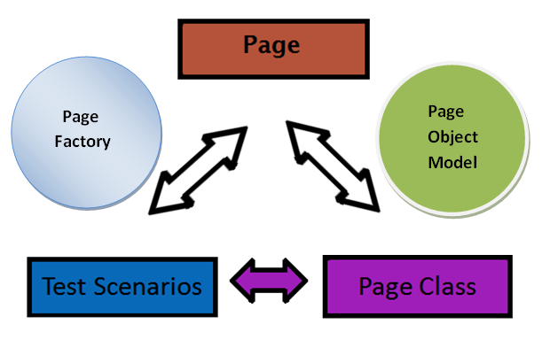

Design patterns and principles

TABLE OF CONTENTS
- Design concepts
- PageObject model
- PageFactory
- LoadableComponent
- Object map
- xUnit design patterns
Design concepts
Design concepts
- There is more than just SOLID
- Separation of concerns - divide your application into distinct features with as little overlap in functionality as possible.
- Common Closure Principle (CCP) - classes those changes together belong together.
- Acyclic Dependencies Principle (ADP) - dependencies between packages must not form cycles.
- Information Hiding - a design decision should be hidden from the rest of the system to prevent unintended coupling.
Design concepts(2)
- Don't Repeat Yourself
- You Ain't Gonna Need It
- Keep It Simple, Stupid
- Golden Hammer
- Feature Creep
- Death March
- Duck Tape Coder
- Copy Folder Versioning
Design concepts(3)
- Iceberg Class
- Spaghetti Code
- Calendar Coder
- Reinventing The Wheel
- Copy Paste Programming
- Boy Scout Rule
- Design By Committee
- Keep design consistent within each layer
PageObject model
PageObject model (2)
When we write tests against a web page, we need to refer to elements within that web page in order to simulate user interactions (click link) and determine what's displayed. However, if we write tests that manipulate the HTML elements directly your tests will be brittle to changes in the UI. A page object wraps an HTML page, or fragment, with an application-specific API (look at page as grouping of web services), allowing us to manipulate page elements without digging around in the HTML.
PageObject model (3)
-
Technique for structuring test code that
- Promotes reuse and reduces duplication
- Makes tests readable
- Makes tests more robust (less brittle)
- Improves maintainability, particularly if the application is rapidly evolving
PageObject model (4)
- Consolidates the code for interacting with any given UI element
- Allows you to model the UI in your tests
-
Exposes methods that reflect the things a user can see and do on that page
- addItemToCart(), getPrice()
- getEntryTitle(), saveDraft(), publishEntry()
- Hides the details of telling the browser how to do those things
PageObject model (5)
Log in POM
import org.openqa.selenium.WebDriver;
import org.openqa.selenium.WebElement;
import org.openqa.selenium.support.FindBy;
import org.openqa.selenium.support.How;
public class LogInPage {
final WebDriver driver;
@FindBy(how = How.ID, using = "log")
public WebElement txtbx_UserName;
@FindBy(how = How.ID, using = "pwd")
public WebElement txtbx_Password;
@FindBy(how = How.NAME, using = "submit")
public WebElement btn_Login ;
public LogIn_PG_POF(WebDriver driver)
{
this.driver = driver;
}
// This method will take two arguments ( Username nd Password)
public void LogIn_Action(String sUserName, String sPassword){
txtbx_UserName.sendKeys(sUserName);
txtbx_Password.sendKeys(sPassword);
btn_Login.click();
}
}
PageObject model - Some considerations
PageFactory
PageFactory (2)
- Inbuilt page object model concept for Selenium WebDriver and it is very optimized
-
One of the key advantage of using Page Factory pattern is AjaxElementLocatorFactory Class
- It is working on lazy loading concept, i.e. a timeout for a WebElement will be assigned to the Object page class with the help of AjaxElementLocatorFactory .
- Here, when an operation is performed on an element the wait for its visibility starts from that moment only. If the element is not found in the given time interval, test case execution will throw 'NoSuchElementException' exception.
PageFactory (3)
AjaxElementLocatorFactory
@Override
protected void configure() {
WebDriver driver;
switch (SeleniumConf.DRIVER) {
case chrome:
driver = createChromeDriver();
break;
case firefox:
default:
driver = creatFirefoxDriver();
break;
}
final EventFiringWebDriver wrap = new EventFiringWebDriver(driver);
wrap.register(new CustomWebDriverEventListener());
bind(WebDriver.class).toInstance(wrap);
bind(ElementLocatorFactory.class).toInstance(
new AjaxElementLocatorFactory(wrap, SeleniumConf.TIMEOUT));
// Page Objects here!
bind(LoginPageObject.class).in(Singleton.class);
bind(RegisterPageObject.class).in(Singleton.class);
bind(EntityHeaderPageObject.class).in(Singleton.class);
bind(ChatPageObject.class).in(Singleton.class);
bind(SitePageObject.class).in(Singleton.class);
final ResourceBundle english = ResourceBundle.getBundle("TestConstants", Locale.ENGLISH);
final ResourceBundle spanish = ResourceBundle.getBundle("TestConstants", new Locale("es"));
Locale.setDefault(Locale.ENGLISH);
switch (SeleniumConf.LANG) {
case es:
bind(ResourceBundle.class).toInstance(spanish);
break;
case en:
default:
bind(ResourceBundle.class).toInstance(english);
break;
}
}
PageFactory (4)
PageFactory - Test case
import java.util.concurrent.TimeUnit;
import pageObjects.Home_PG_POF;
import pageObjects.LogIn_PG_POF;
import org.openqa.selenium.WebDriver;
import org.openqa.selenium.firefox.FirefoxDriver;
import org.openqa.selenium.support.PageFactory;
import org.testng.annotations.Test;
import org.testng.annotations.BeforeMethod;
import org.testng.annotations.AfterMethod;
public class PageFactory_TestCase {
static WebDriver driver;
Home_PG_POF HomePage;
LogIn_PG_POF LoginPage;
@BeforeMethod
public void beforeMethod() {
driver = new FirefoxDriver();
driver.manage().timeouts().implicitlyWait(10, TimeUnit.SECONDS);
driver.get("http://www.store.demoqa.com");
HomePage = PageFactory.initElements(driver, Home_PG_POF.class);
LoginPage = PageFactory.initElements(driver, LogIn_PG_POF.class);
}
@Test
public void test() {
HomePage.lnk_MyAccount.click();
LoginPage.LogIn_Action("testuser_1", "Test@123");
System.out.println(" Login Successfully, now it is the time to Log Off buddy.");
HomePage.lnk_LogOut.click();
}
@AfterMethod
public void afterMethod() {
driver.quit();
}
}
Loadable Component
Loadable Component (2)
- A base class that aims to make writing PageObjects less painful
- By providing a standard way of ensuring that pages are loaded and providing hooks to make debugging the failure of a page to load easier
- Can be used to help reduce the amount of boilerplate code in your tests, which in turn make maintaining your tests less tiresome
- There is currently an implementation in Java that ships as part of Selenium 2, but the approach used is simple enough to be implemented in any language
Loadable Component (3)
LoadableComponent is a base class in Selenium, which means that you can simply define your Page Objects as an extension of the LoadableComponent class
Loadable component
package com.example.webdriver;
import org.openqa.selenium.By;
import org.openqa.selenium.WebDriver;
import org.openqa.selenium.WebElement;
import org.openqa.selenium.support.FindBy;
import org.openqa.selenium.support.PageFactory;
import static junit.framework.Assert.assertTrue;
public class EditIssue extends LoadableComponent {
private final WebDriver driver;
// By default the PageFactory will locate elements with the same name or id
// as the field. Since the summary element has a name attribute of "summary"
// we don't need any additional annotations.
private WebElement summary;
// Same with the submit element, which has the ID "submit"
private WebElement submit;
// But we'd prefer a different name in our code than "comment", so we use the
// FindBy annotation to tell the PageFactory how to locate the element.
@FindBy(name = "comment") private WebElement description;
public EditIssue(WebDriver driver) {
this.driver = driver;
// This call sets the WebElement fields.
PageFactory.initElements(driver, this);
}
@Override
protected void load() {
driver.get("https://github.com/SeleniumHQ/selenium/issues/new");
}
@Override
protected void isLoaded() throws Error {
String url = driver.getCurrentUrl();
assertTrue("Not on the issue entry page: " + url, url.endsWith("/new"));
}
public void setSummary(String issueSummary) {
clearAndType(summary, issueSummary);
}
public void enterDescription(String issueDescription) {
clearAndType(description, issueDescription);
}
public IssueList submit() {
submit.click();
return new IssueList(driver);
}
private void clearAndType(WebElement field, String text) {
field.clear();
field.sendKeys(text);
}
}
Loadable Component (4)
- The Loadable Component Pattern also allows you to model your page objects as a tree of nested components
- Allows better way to manage navigations between pages
- Uses the “load” method that is used to navigate to the page and the “isLoaded” method which is used to determine if we are on the right page

Slow Loadable Component
Slow Loadable Component (2)
- The SlowLoadableComponent is a sub class of LoadableComponent
- get() for SlowLoadableComponent will ensure that the component is currently loaded
- isError() method will check for well known error cases, which would mean that loading has finished, but an error condition was seen
- waitFor() method will wait to run the next time
- After a call to load(), the isLoaded() method will continue to fail until the component has fully loaded
Slow Loadable Component (3)
Slow Loadable Component
public class ExpectedPage extends SlowLoadableComponent {
private WebDriver driver;
public DefendantPage(WebDriver drv) {
super(new SystemClock(), timeOutInSeconds);
System.out.println("Loading Defendant Page");
this.driver = drv;
this.driver = new ReusableInternetExploderDriver();
this.get();
PageFactory.initElements(driver, this);
}
@Override
protected void isLoaded() throws Error {
WebElement myDynamicElement = ( new WebDriverWait(driver, 10) )
.until(new ExpectedCondition(){
return d.findElement(By.className("prettyboxlabel"));
}});
if ( this.driver.getTitle().equalsIgnoreCase("Expected Text") ) {
System.out.println("Expected page is loaded.");
assertTrue(true);
} else {
System.out.println("Expected page is not loaded.
Actual page label is: " + pagelabel );
assertTrue(false);
}
}
@Override
protected void load() {
System.out.println("Calling load...");
// do whatever is necessary here to load the page
// and then isLoaded() will be called again
}
// the rest of the class is below , as necessary
}
Object map
Object map
- A very common way of minimizing the time it takes to update your automated test scripts is the use of a central object repository(a.k.a Object map)
- can be implemented as a collection of key-value pairs, with the key being a logical name identifying the object and the value containing unique objects properties used to identify the object on a screen
Object map (2)
- Our object map is a simple .properties text file that we add to our Selenium project
- The key for each object, for example bing.homepage.textbox, is a logical name for the object that we will use in our script.
- The corresponding value consists of two parts: the attribute type used for uniquely identifying the object on screen and the corresponding attribute value.
Object map (3)
Retrieving objects from the object repository - we need to define an ObjectMap, with single argument constructor (path to the .properties file)
ObjectMap
public class ObjectMap {
Properties prop;
public ObjectMap (String strPath) {
prop = new Properties();
try {
FileInputStream fis = new FileInputStream(strPath);
prop.load(fis);
fis.close();
}catch (IOException e) {
System.out.println(e.getMessage());
}
}
}
Object map (4)
- As you can see using an object from the object map in your test is as easy as referring to its logical name (i.e., the key in our object map)
- Object repository maintenance - with this straightforward mechanism we are able to vastly reduce the amount of time needed for script maintenance in case object properties change
- All it takes is an update of the appropriate entries in the object map and we’re good to go and run our tests again
xUnit patterns
xUnit patterns (2)
- Back Door Manipulation: We set up the test fixture or verify the outcome by going through a back door (such as direct database access).
- Database Sandbox: We provide a separate test database for each developer or tester
- Fresh Fixture: Each test constructs its own brand-new test fixture for its own private use.
- Generated Value: We generate a suitable value each time the test is run.
xUnit patterns (3)
- Four-Phase Test: We structure each test with four distinct parts executed in sequence (Setup, Exercise, Verify, Teardown)
- Lazy Setup:We use Lazy Initialization of the fixture to create it in the first test that needs it
- Minimal Fixture:We use the smallest and simplest fixture possible for each test.
- Mock Object:We replace an object the SUT depends on with a test-specific object that verifies it is being used correctly by the SUT.
xUnit patterns (3)
- Shared Fixture:We reuse the same instance of the test fixture across many tests
- In-line Setup: Each Test Method creates its own Fresh Fixture by calling the appropriate constructor methods to build exactly the test fixture it requires.
- And many more
 evgenikostadinov@gmail.com
evgenikostadinov@gmail.com